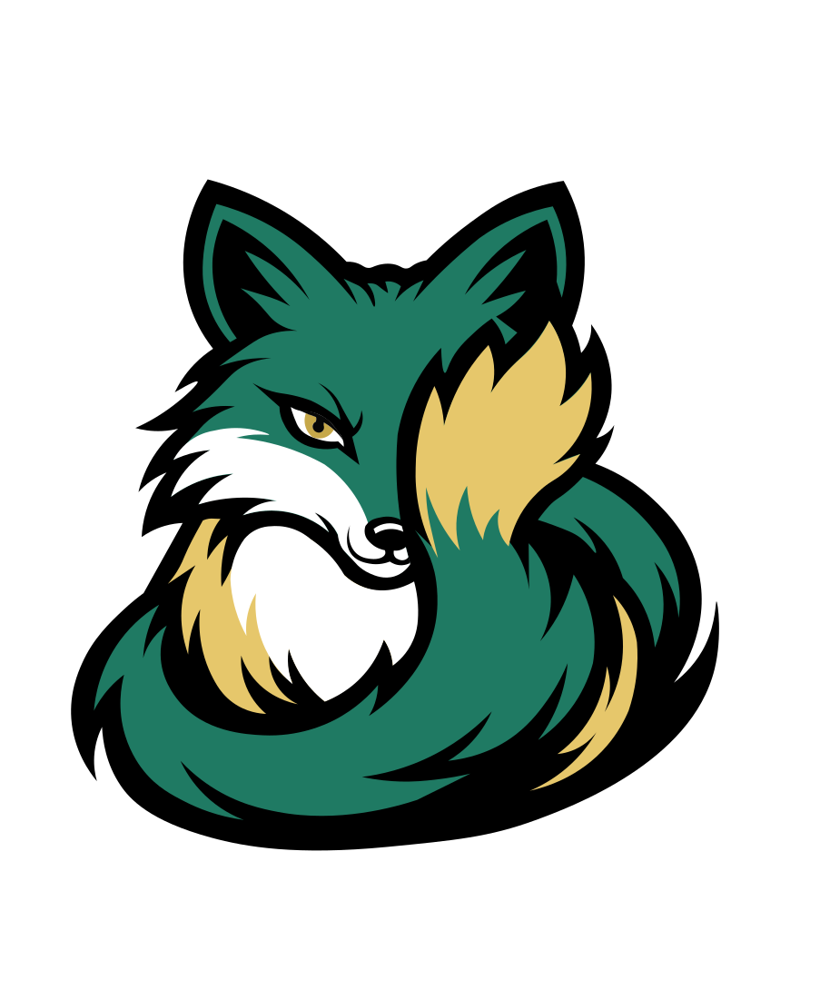

Brooke Betancur
About Lucky Fox Designs
I am a UX designer in training with a strong visual design background and a focus on creating human-centered digital experiences that are intuitive and visually clear. My foundation in graphic and publication design shapes how I approach hierarchy, typography, and visual storytelling in digital spaces.
In addition to my design work, I bring years of experience as a business owner, where I developed and managed real-world systems for scheduling, communication, and customer experience. This has given me a practical understanding of how people interact with systems and where friction occurs, which directly informs how I approach UX design.
View My Resume